To obtain a National License through the MSDFAR in Sri Lanka, you would typically follow these steps:
•Access to the MSDFAR system
The system can be accessed through Officer → New MSDFAR System by visiting the Department of Fisheries and Aquatic Resources website.
• Users authorized to access the system will be provided with login credentials.
• Upon successful login, users will have access to the dashboard with relevant features and functionalities.
Login to the FI Login by entering username and password.
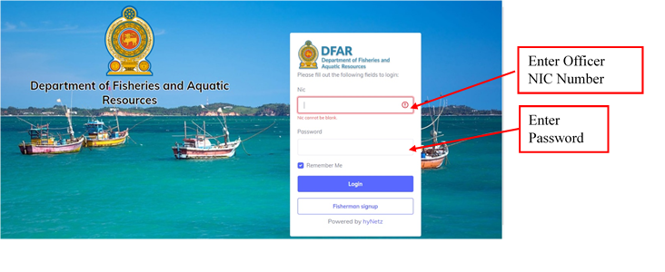
• After that, the Fisherman Register module can be accessed in the manual bar of the screen that appears by the District office login.
• Click " Fisherman Register " option on the dashboard to issue National license to a boat.
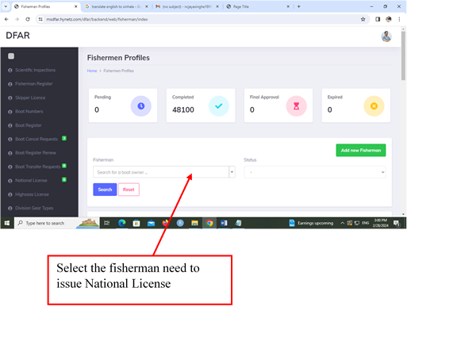
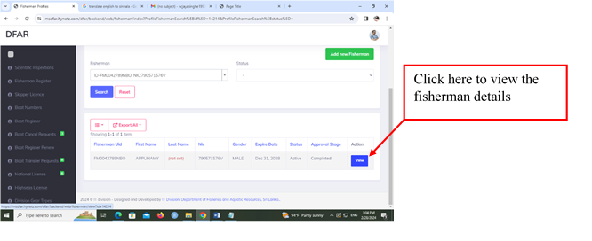
Once the details appeared Click on “Manage Profile as Fisherman”
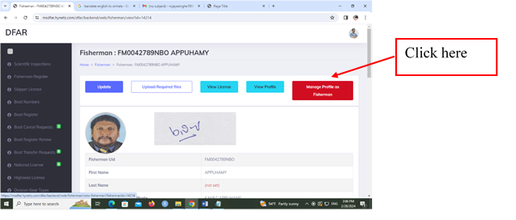
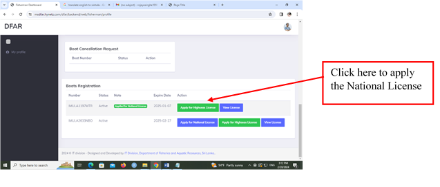
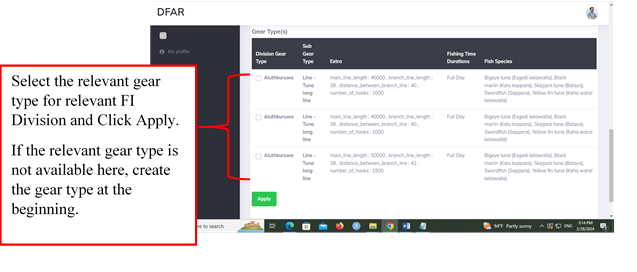
• New entry for National license can be viewed by clicking " National license " option on the dashboard.
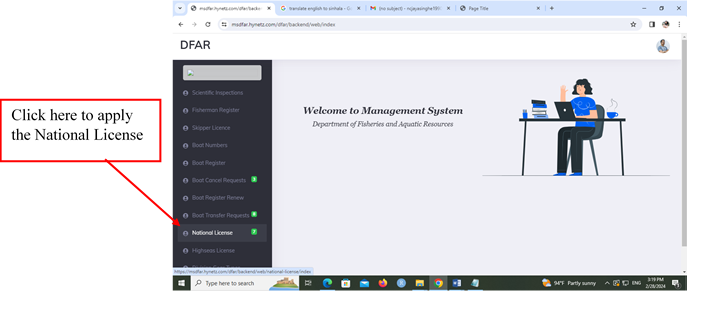
• Required Boat number for issuing National License can be searched with Fisherman ID or Boat Registration ID.
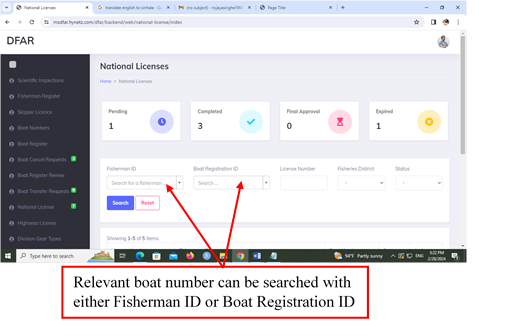
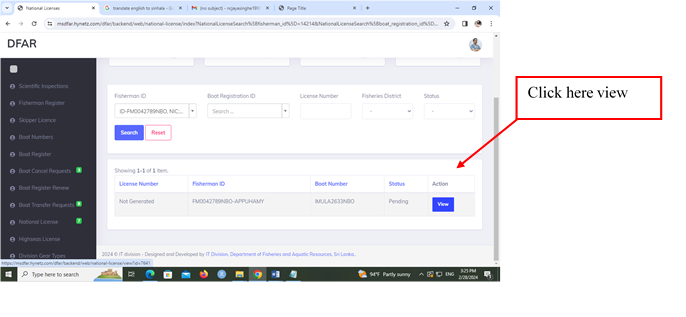
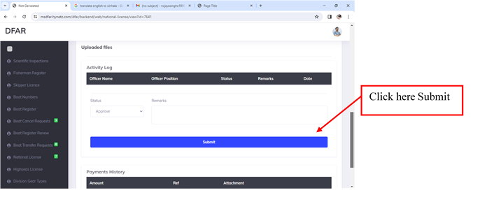
• The National License can be viewed through the “Fisherman Register” on the dash board and search the Fisherman ID
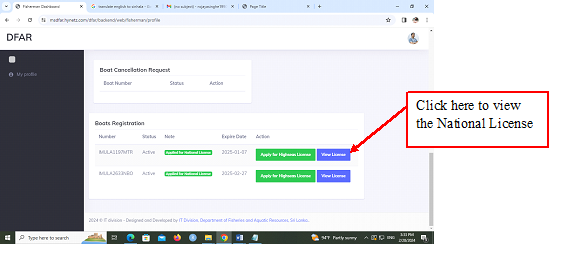
• The National License appears as follows.
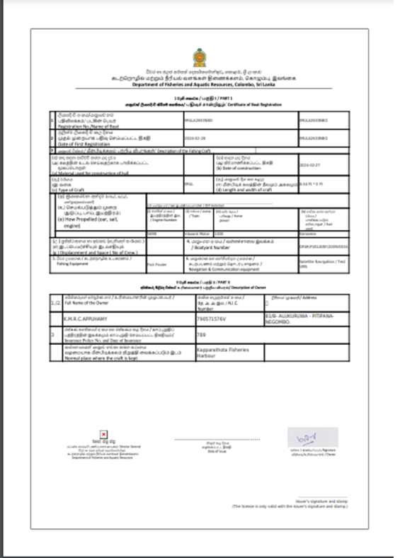